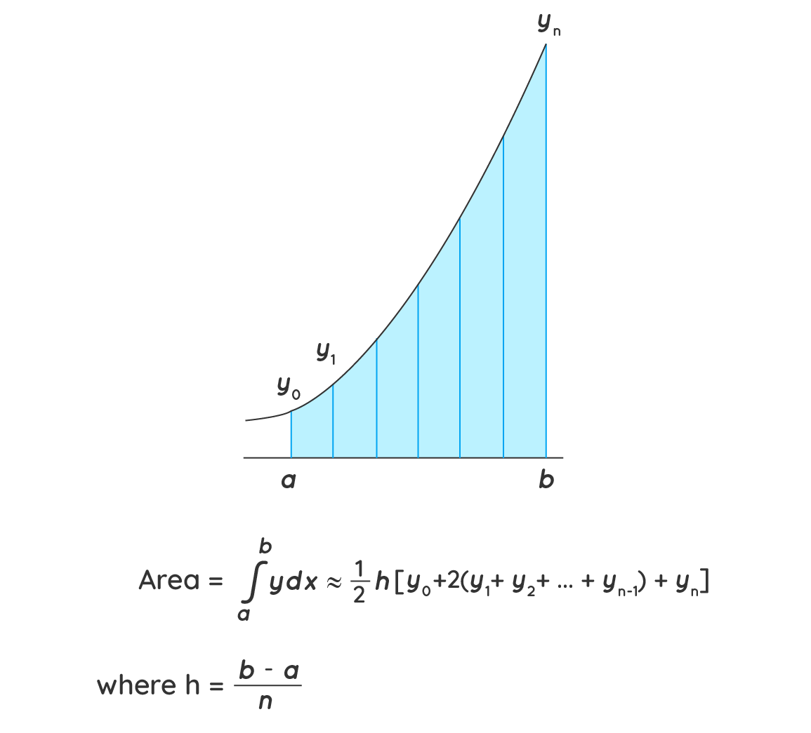
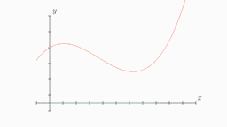
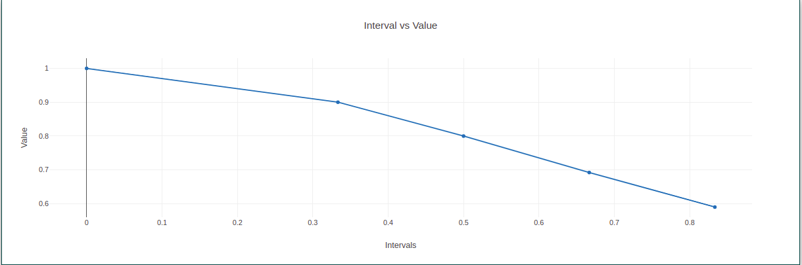

To Perform Numerical Integration using Trapezoidal Formula for a given data set / function
In mathematics, the trapezoidal rule, also known as the trapezoid rule or trapezium
rule is a technique for approximating the definite integral in numerical analysis. The
trapezoidal rule is an integration rule used to calculate the area under a curve by dividing the
curve into small trapezoids. The summation of all the areas of the small trapezoids will give
the area under the curve. Let us understand the trapezoidal rule formula and its proof using
examples in the upcoming sections.
The trapezoidal rule is applied to solve the definite integral of the form b∫a f(x) dx, by
approximating the region under the graph of the function f(x) as a trapezoid and calculating its
area. Under the trapezoidal rule, we evaluate the area under a curve is by dividing the total
area into little trapezoids rather than rectangles.

We can calculate the value of a definite integral by using trapezoids to divide the area under the curve for the given function.
Let f(x) be a continuous function on the interval (a, b). Now divide the intervals (a, b) into n
equal sub-intervals with each of width,
Δx = (b - a)/n, such that a = x0 < x1 < x2 < x3 <…..< xn=b
Then the Trapezoidal Rule formula for area approximating the definite integral b∫af(x)dx is
given by:
b∫af(x) dx ≈ Tn = △x/2 [f(x0) + 2f(x1) + 2f(x2) +….2f(xn-1) + f(xn)]
where, xi = a + i△x
If n → ∞, R.H.S of the expression approaches the definite integral b∫a f(x)dx

To prove the trapezoidal rule, consider a curve as shown in the figure above and divide the area
under that curve into trapezoids. We see that the first trapezoid has a height Δx and parallel
bases of length y0 or f(x0) and y1 or f1. Thus, the area of the first trapezoid in the above
figure can be given as,
(1/2) Δx [f(x0) + f(x1)]
The areas of the remaining trapezoids are (1/2)Δx [f(x1) + f(x2)], (1/2)Δx [f(x2) + f(x3)], and
so on.
Consequently,
∫ba f(x) dx ≈ (1/2)Δx (f(x0)+f(x1) ) + (1/2)Δx (f(x1)+f(x2) ) + (1/2)Δx (f(x2)+f(x3) ) + … +
(1/2)Δx (f(n-1) + f(xn) )
After taking out a common factor of (1/2)Δx and combining like terms, we have,
∫ba f(x) dx≈ (Δx/2) (f(x0)+2 f(x1)+2 f(x2)+2 f(x3)+ ... +2f(n-1) + f(xn) )
a= float(input("Enter the lower limit: "))
b= float(input("Enter the upper limit: "))
n= int(input("Enter the length: "))
def f(x):
return (1/(1+x**2))
def trapezoidal(a,b,n):
h= (b-a)/n
sum1= f(a)+f(b)
for i in range(1,n):
w= a + i*h
sum1+= 2*f(w)
total= sum1 * h/2
return total
result= trapezoidal(a,b,n)
print("Result by Trapezoidal method is: ",result)
Click here to perform simulation
Take Observations from the method and tabulate it for the given intervals.
Plot a graph also. (Interval vs Value).

Hence we calculate the definite integral
The summation of all the areas of the small trapezoids will give the area under the curve.